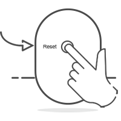

<!doctype html>
<html>
<head>
  <meta charset="utf-8" />
  <meta name="viewport" content="width=device-width, initial-scale=1, user-scalable=no" />
  <title>So setzen Sie das Gerät auf die Werkseinstellungen zurück</title>
  <link href="../help.en.css" rel="stylesheet" />
  <style>
    .more {
      background: rgba(255,255,255,1);
    }
    .more-content {
      line-height:20pt;
    }
  </style>
</head>
<body class="more">
<script src="../mithril/1.1.6/mithril.min.js"></script>
<script src="../help.js"></script>
<script>
  var data = [
    {
      title:"So setzen Sie das Gerät auf die Werkseinstellungen zurück?",
      card: [
        {
          left:'',
          right: [
            'Suchen Sie die Reset-Taste des Geräts, halten Sie sie gedrückt, bis die Kontrollleuchte erlischt, und lassen Sie sie dann los. Sie hören einen "Kuckuck", warten, bis das Gerät neu gestartet wurde und die Kontrollleuchte aufleuchtet.',
          ],
          leftCol: 3,
          rightCol: 9,
        }
      ]
    }
  ]
  help.more(data)
</script>
</body>
</html>
